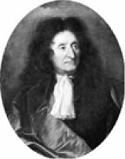

Jean De La Fontaine, Ressam Hyacinthe Rigaud, 18. yüzyıl
Jean De La Fontaine (1621-1695)
“Ezop’tur babası benim kahramanların.
Tarihleri uydurma da olsa bunların Ders olacak doğru şeyler vardır içinde. Her şey konuşur burada, balıklar bile.
Bütün söyledikleri bizleredir ama: insandır eğittiğim hayvanlar yoluyla.”
Fransız ve dünya edebiyatının başyapıtları arasında yer alan fabllarıyla ünlü şair, 1621 yılında küçük bir Fransız şehrinde dünyaya geldi. Ömrü boyunca yazdığı masallar başucundayken, yetmiş dört yaşında son nefesini verdi.
Masallarında hayvanları neden kullandığını şöyle açıklıyor La Fontaine:
“Masallar sadece ahlak dersi değil, birçok bilgi de verir bize. Hayvanların özelliklerini, değişik karakterlerini öğretirler... Böylece bize kendimizi de tanıtmış olurlar, çünkü biz insanlar, akılsız yaratıklarda iyi kötü ne varsa hepsinin özetiyiz.”
La Fontaine masallarında tilkinin kurnazlığından, karıncanın çalışkanlığından, aslanın gücünden, kuzunun masumiyetinden bahseder. Daha nice hayvanın belirgin özelliklerini kullanarak dersler sunar.
“Bir masal iki parçanın bir araya gelmesiyle yapılır: Bu parçalardan biri masalın bedeni, öteki canıdır denebilir. Beden masalın kendisi, can ondan çıkan derstir” diyerek masallarında verdiği dersin öneminden bahsetmiştir La Fontaine.
La Fontaine dalgın bir kişiliğe sahipti. Bir gün gezinti esnasında bir dostunun yanına uğramak ister. Kapıyı çalar ve dostunun eşine onunla görüşmek istediğini söyler.
Fakat unuttuğu bir şey vardır La Fontaine’in, dostu bir hafta önce kendisinin de bulunduğu bir törenle defnedil-miştir.
Bu sözlere adamın eşi şaşkınlıkla cevap verir:
“Bizim bey öbür dünyaya gideli bir hafta oldu, unuttunuz mu?”
”Unutmadım tabii” diyerek işi düzeltmeye çalışan La Fontaine, “Yalnız bugüne kadar orada kalacağını tahmin etmemiştim” der.
La Fontaine’den...
“Susayınca kuyuya inmesine inmeli, ama nasıl çıkılacağını da düşünmeli.”
Altın Yumurtlayan Tavuk
Aç gözlü her şeyi birden ister,
Bu yüzden her şeyi birden kaybeder.
Bir adamın tavuğu, masal bu ya,
Altın yumurtlarmış her sabah;
Bir yumurta yerine bir altın değil,
Koskoca bir altın yumurta!
Adam bir gün demiş ki kendi kendine:
“Bir hazine olsa gerek bizim tavuğun içinde.”
Hemen aldığı gibi bıçağı,
Kesmiş tavuğu, karnına bakmış:
Ne altın var, ne gümüş;
Öteki tavuklar neyse bu da o:
Bindiği dalı kesmiş, hırbo!
Ne güzel ders para düşkünlerine!
Çok gördük böylelerini günümüzde:
Daha çok altınımız olsun derken,
Olanı da gitti ellerinden.
Ressam François Chauveau, 17. yüzyıl
Savaşa Giden Aslan
Aslan sefere çıkmayı koymuş aklına.
Savaş divanı kurmuş, haberciler salmış
Büyük küçük bütün uyruklarına.
Hepsi sefere katılmaya gelmiş,
Her biri kendi yeteneğiyle.
Fil takım taklavat taşıyıp sırtında
Fil âdetince savaşacakmış;
Kurt saldırıları yönetecek,
Tilki gizli serviste çalışacakmış.
Maymunun işiyse türlü oyunlarla
Düşmanı oyalamakmış.
Biri çıkmış demiş ki aslana:
“Eşekleri almayalım, hızlı değiller,
Tavşanlar da gelmesin paniklerler.”
“Yoo” demiş kral, “Onlara da iş buluruz,
Gelmezlerse eksik kalır ordumuz.
Eşek boru çalıp düşmanı ürkütür,
Tavşan da vızır vızır haber götürür.”
Aklı başında kral böyle olur:
En küçük uyruğunu işe yaratır.
Herkesin ne yapabileceğini bilir:
Akıllı kişiye yaramayan şey yoktur.
Ressam François Chauveau, 17. yüzyıl